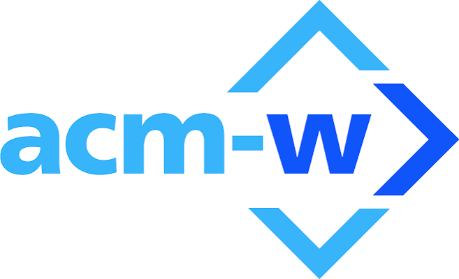
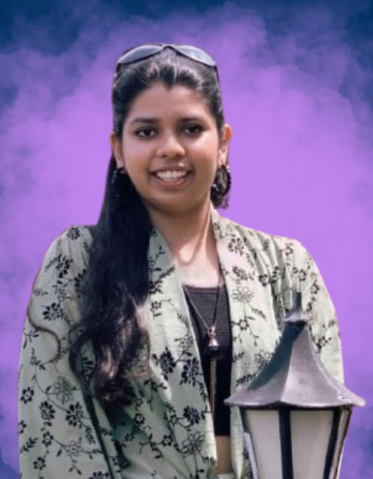
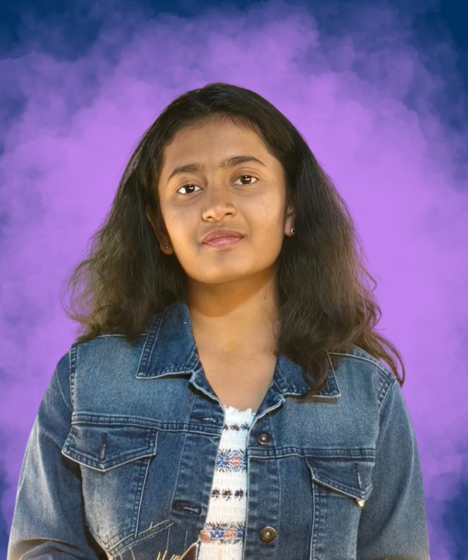

Association of Computing Machinery for Women
By women. For women.
Our Mission — To build a supportive, inclusive home for women and allies in computing at BPHC, through mentorship, hands-on projects, and a community that ships real work together.
Our Vision — A campus where women and allies don't just participate in computing — they lead it.
Learn more →
Give it a spin and dive in!
OUR DOMAINS
Find your domain.
Five domains, one chapter. Pick where your interests lie and see what each team is building.
Machine Learning
Models, datasets and hands-on ML/AI projects — no prior experience required.
Explore domain → 02Competitive Coding
DSA practice, contest prep and problem-solving sessions for every level.
Explore domain → 03UI/UX
Design thinking, prototyping and crafting user-first experiences.
Explore domain → 04Web Dev
Full-stack builds, chapter tools and modern web workshops.
Explore domain → 05App Dev
Mobile app projects — from idea to shipped prototype.
Explore domain →AROUND THE CHAPTER
More to explore.
Hover a card to flip it and jump straight to the page.
IN OUR MEMBERS' WORDS
Testimonials.
"ACM-W is where I found my first real mentor on campus — and later became one myself."
"I walked into my first workshop knowing nothing about Git. A year later I was running one."
"The mentorship circles here shaped how I think about building teams, not just code."
CURRENT SENATE
Who's running the chapter.

Navya Garg
PresidentOverall chapter
Aniya Mulay
Vice PresidentOverall chapter

Yashika Shriramoj
Tech LeadTechnical
Shivani Neelamraju
SecretaryOverall chapter
ABOUT US
By the chapter. For the chapter.
ACM-W BPHC is the student chapter of ACM's Council on Women in Computing at BITS Pilani, Hyderabad Campus.
ACM-W advocates internationally for the full engagement of women in all aspects of the computing field, providing a wide range of programs and services and working in the larger community to advance the contributions of technical women.
ACM-W at BITS Pilani Hyderabad was formed on campus in September 2023. Together we aim to build a supportive community where women can openly thrive and shape the future of technology. Our club is open to all girls who have a passion for technology, regardless of their background or experience.
ACM-W at BITS Hyderabad is a growing community united by curiosity, ambition, and a shared passion for the technical field. Our aim is to create a space where women can code, create and grow together — one project, workshop, and connection at a time.
We believe that diversity drives innovation, and that the best solutions come from rooms where different perspectives are welcomed and heard. On a campus where girls make up only a small percentage of students, we're building a space where that isn't the case — where active participation is encouraged, mistakes are part of learning, and every member has a contribution.
Our members range from first-year students just discovering their interest in tech to seniors mentoring others and leading projects. Regardless of your background or experience, you'll find a supportive community that works together and overcomes challenges.
Through workshops, hackathons, mentorship and social events, we equip our members with the skills and confidence to thrive in tech and lead the next wave of innovation.
At ACM-W, we all collaborate together to create different projects and learn from each other.
Workshops & Skill-Building — We host hands-on technical workshops covering a variety of domains, no prior experience required.
Hackathons & Project Sprints — We organize women-only hackathons and build sprints where members team up to design, code, and ship real projects in a short timeframe, turning ideas into working prototypes while building teamwork and technical skills under pressure.
Speaker Sessions — We invite engineers, founders, and researchers from industry to share their journeys, insights, and advice, connecting students to real role models and potential career opportunities.
Codeflix — Every so often, we gather together and all the members code and work on projects while binging a movie.
ACM-W BPHC was founded in September 2023 by a small group of students who wanted a dedicated space for women in computing on campus. What started as informal meetups quickly grew into a full chapter with its own senate, domains, and a calendar of workshops, fests, and mentorship programs — built by the community it now serves.
EVENTS
What's due, what's happening.
A live calendar of chapter workshops, deadlines and meetups — click a date to see what's on.
Dates with a dot have events or deadlines — click one to see details.
Upcoming
Internal Events
Codeflix
Every semester, ACM-W BPHC brings you CodeFlix — an evening where you kick back with a movie while cracking coding problems on the side. No pressure, no deadlines to panic over — just good company, a good watch, and code running in the background.
It's the perfect mix of chill and challenge: pause for a plot twist, resume for a bug fix.
Grab your popcorn. Fire up your IDE. It's Codeflix time.
Workshops
App Dev Workshop
Day and Date: Tuesday, 10th Feb 2026
Time: 600 PM– 8:00 PM
Venue: F-109
This workshop allowed participants to make an app from scratch using tools like Flutter, VS Code and Git for a hands-on experience. Our then App Dev lead, Navya along with Aasritha fostered an inclusive environment that made the workshop a grand success.
Inductions
Inductions are currently closed.
FESTS
Big stages we show up for.
From campus technical fests to inter-chapter summits, here's where you'll find us.
PROJECTS & BLOGS
Things we've shipped and written.
Chapter projects, member blog posts and articles — filter, sort, and dive in.
The Future of Tech: Key Leadership Strategies for 2026
Examining the major trends and strategies shaping the technology landscape this year, from deep-learning transformations to building inclusive engineering pipelines within our chapter.
Top Stories
Mentorship Matching Tool
An internal tool pairing new members with senior mentors based on interests and branch.
Why representation in code reviews matters
A member reflects on culture-building in engineering teams.
Workshop Signup Bot
A lightweight bot automating RSVP and reminders for chapter workshops.
Notes from the Inter-chapter Summit 2025
Highlights and takeaways from last year's multi-campus summit.
A beginner's guide to open source
Where to start contributing, written by our Technical domain.
Chapter Resource Hub
A single shared drive structure for all domain resources — now used chapter-wide.
My Journey Building a Multi-Sensor Hardware Warning System
A step-by-step devlog detailing the collaborative design and debugging process of our recent induction task.
Demystifying the Latest Breakthroughs in Quantum Algorithms
Breaking down recent industry announcements regarding qubit stability and dual-control Toffoli gate execution.
Pioneers of Code: Celebrating Margaret Hamilton and Grace Hopper
A historical deep-dive into the foundational engineering contributions made by women in early computational science.